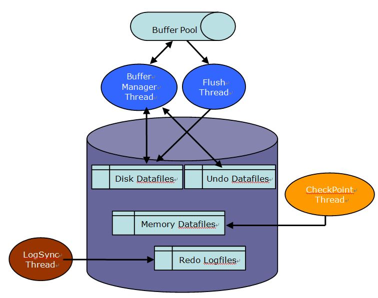

Overview
When a database handles a transaction, it generally records a redo log using WAL (Write Ahead Logging) for recovery purposes. Changing, saving or deleting data is the general process of handling the transaction after recording the redo log. Both redo logs and data require persistent physical storage space. This physical storage can be allocated either to the same disk or to physically distinct disks.
However, the user should note that significant disk I/O contention may occur if redo logs and data are placed on the same disk while processing numerous transactions.
This guide describes how ALTIBASE HDB writes redo logs and data and how to configure disk volumes to minimize disk I/O contention.
This guide is up to date as of ALTIBASE HDB version 6.5.
What Causes Disk I/O
Redo Log
ALTIBASE HDB’s redo logs record all changes that were made by any transactions. Redo logs are crucial for the purpose of data recovery.
Redo logs contain information about any changes made to data, as well as changes made to any resources required to handle transactions.
ALTIBASE HDB’s redo logs are initially recorded in the memory mapping area by mmap and are then periodically saved into the redo log file by LogSyncThread. The history of changes in the memory mapping area is guaranteed to be saved into a file even if an executed process terminates abnormally.Therefore, the log file cannot be lost except in the case of power failure or an OS hang (if this issue is encountered, please refer to the ALTIBASE Troubleshooting Guide).
This method is used by default in order to minimize frequent disk I/O and maximize performance. However, the redo log writing method can be changed if high transaction performance is not required.
Check Point
As a hybrid database, ALTIBASE HDB provides support for both in-memory tables and disk tables. In this section, activities that incur disk I/O for memory tables will be discussed.
During the startup stage, data contained within memory tables must be loaded from disk. The storage space for in-memory data is managed as pages, and each page has a fixed size of 32K. Each page is divided into n slots based on the table record size, and each slot records data.
When data is changed, saved or deleted by a transaction, the page that stored the modified data is registered to the list of dirty pages. This process is managed internally. The process of saving these dirty pages to physical storage on disk is referred to as a checkpoint.
Due to the fact that memory is a volatile storage medium, the checkpoint process is necessary to provide data durability in the case of situations such as power failures.
As the number of transactions being processed by in-memory tables increases, the number of dirty pages that must be flushed to disk by the checkpoint process will increase as well. If redo logs and in-memory table datafiles are located on the same physical disk, this load may cause disk I/O contention. In order to avoid any possible performance degradation, it is highly recommended to store redo logs and datafiles on separate physical disks.
For example:
Classification | Disk Configuration |
|---|---|
Redo Logs | /ALTIBASE_REDO_LOG |
Datafiles | /ALTIBASE_DATA |
On-Disk DB
In the previous section, we discussed the process of storing redo logs and causes for disk I/O for in-memory tables. This section will describe causes for disk I/O for disk tables, as well as configuration recommendations.
Because disk tables keep all data on a disk file, disk queries must access the physical disk every time a transaction is executed. This is extremely costly from a disk I/O perspective. Therefore, virtually every disk DBMS creates and utilizes a temporary memory storage area commonly referred to as a buffer. By storing frequently used data in the buffer area, disk I/O costs can be reduced significantly.
The size of the memory buffer is determined by the user and has a page size of 8K.
When a query is executed against a disk table, ALTIBASE HDB will initially search the buffer area to determine if it contains the requested data. If the data does not exist in the buffer, ALTIBASE HDB will load the data from the physical datafile. Any modified pages will be registered to the Flush List. When a flush occurs, any of the pages registered to this list will be transferred and stored on disk. If the buffer area lacks sufficient space, the LRU algorithm will identify and transfer rarely accessed pages to disk. This process is also referred to as BufferReplace.
If the datafiles for in-memory tablespaces and disk tablespaces are allocated to the same physical disks, performance may degrade if frequent checkpoints and BufferReplaces cause excessive disk I/O.
Therefore, for maximum performance the user should always allocate memory and disk datafiles to separate physical disks.
For example:
Classification | Disk configuration |
|---|---|
Redo Logs | /ALTIBASE_REDO_LOG |
Memory Table Datafiles | /ALTIBASE_MEMORY_DATA |
Disk Table Datafiles | /ALTIBASE_DISK_DATA |
Undo TableSpace
When a transaction modifies data, memory tables manage an undo image in memory for recovery purposes. The original data is copied to a separate area, and an out-place update is made to the replicated data. This method is also known as MVCC.
In contrast, disk tables copy the original data to the undo tablespace. The transaction then modifies the data located in the original location. This method is known as an in-place update.
For recovery, the copy of the original data will be copied back into the undo tablespace. However, it is important to note that the undo tablespace is being constantly updated as disk tables continue to process transactions. Therefore, the user should consider placing disk table datafiles and undo tablespace datafiles on separate physical disks to prevent disk I/O related performance issues.
For example:
Classification | Disk Configuration |
|---|---|
Redo Logs | /ALTIBASE_REDO_LOG |
Memory Table Datafiles | /ALTIBASE_MEMORY_DATA |
Disk Table Datafiles | /ALTIBASE_DISK_DATA |
Undo Tablespace Datafiles | /ALTIBASE_DISK_UNDO |
Recommendations for Effective Data File Configuration
As described in the previous sections, significant disk I/O contention may occur if the same physical disk is used to write redo logs and store memory table datafiles and disk table datafiles.
This issue becomes most apparent when the system is under significant load. Redo logs, memory table datafiles and disk table datafiles should be placed on separate physical disks to reduce the chance of disk I/O related performance degradation.
Disk I/O
As depicted visually above, avoiding disk bottlenecks is difficult if redo log writing, checkpointing and buffer management all occur on a single disk.

Configuration Example
Example 1.
Adhering to the configuration below is highly recommended. If this configuration is not feasible due to your current system environment, at a bare minimum the redo logs should be segregated onto a separate physical disk.
Classification | Disk Configuration |
|---|---|
ALTIBASE HOME | /ALTIBASE |
Redo Logs | /ALTIBASE_REDO_LOG |
Memory Table Datafiles | /ALTIBASE_MEMORY_DATA |
Disk Table Datafiles | /ALTIBASE_DISK_DATA |
Disk Indexes | /ALTIBASE_DISK_INDEX |
Undo Tablespace Datafiles | /ALTIBASE_DISK_UNDO |
- ALTIBASE_HOME is not only reserved for binary, header, library and other files for development and operation. ALTIBASE_HOME also saves critical trace files and should be allocated its own physical disk for maximum performance.
- There is no need to allocate a separate physical disk for memory indexes, because indexes are reorganized in memory after they are loaded during ALTIBASE HDB’s STARTUP phase. Changing memory indexes does not require a separate login.
- Separating disk table datafiles and disk indexes onto separate physical disks is recommended for the purpose of minimizing disk I/O contention that may occur from changes such as datafile expansion.
- This document does not describe disk I/O considerations related to backup procedures. Please refer to the Backup/Recovery document for more information.
Example 2.
If physical disk availability is limited, the following configuration is recommended as a bare minimum.
Classification | Disk Configuration |
|---|---|
Redo Logs | /ALTIBASE_REDO_LOG |
ALTIBASE HOME and All Datafiles | /ALTIBASE |
This configuration is also plausible if ALTIBASE HDB’s hybrid functionality is not utilized. When using only memory tables or only disk tables, the risk of disk I/O contention is minimized.
Example 3.
If memory tables are used sparsely and the vast majority of data and processing is performed by disk tables, the following configuration can be considered.
Classification | Disk Configuration |
|---|---|
Redo Logs | /ALTIBASE_REDO_LOG |
ALTIBASE HOME and Memory Table Datafiles | /ALTIBASE |
Disk Table Datafiles 1 (Complex Tasks) | /ALTIBASE_DISK_COMPLEX |
Disk Table Datafiles 2 (Simple Tasks) | /ALTIBASE_DISK_SIMPLE |
Placing tablespaces that regularly process complex queries and tablespaces that typically process simple queries on separate physical volumes is an effective method of dispersing disk I/O. However, if the environment frequently executes BufferReplace processes, this configuration may suffer from performance degradation.
Related Documents :
Copyright ⓒ 2000~2015 ALTIBASE Corporation. All Rights Reserved.
These documents are for informational purposes only. These information contained herein is not warranted to be error-free and is subject to change without notice. Decisions pertaining to ALTIBASE HDB’s product characteristics, features and development roadmap are at the sole discretion of Altibase. Altibase may own related patents, trademarks, copyright or other intellectual property rights of products and/or features discussed in this document.
{kind=link}
{kind=link}